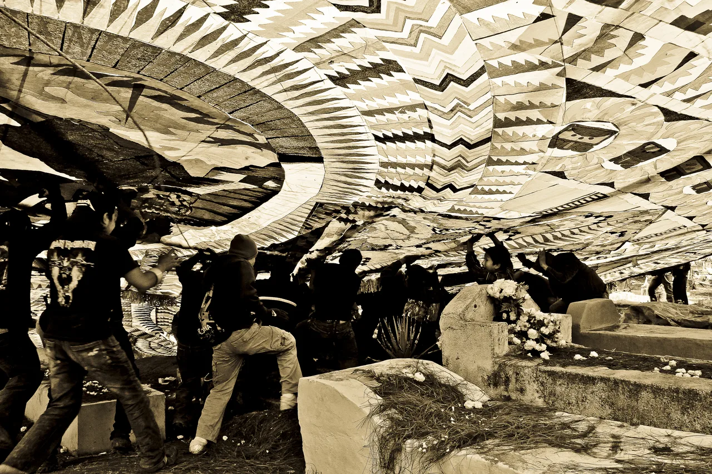
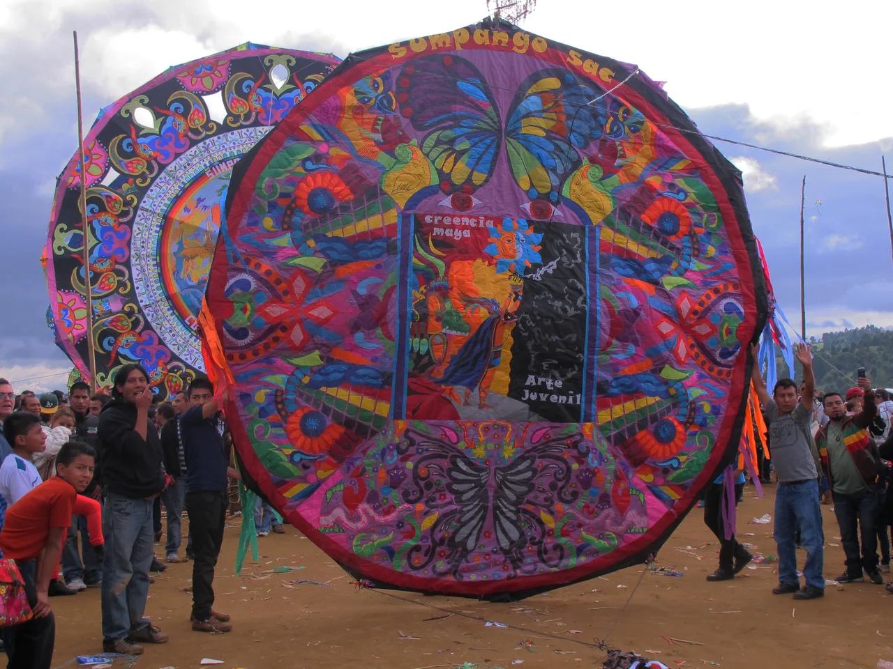

El primero de noviembre, en el cementerio indígena de Santiago Sacatepéquez, decenas de muchachos levantan contra el cielo círculos de caña y papel de china de veinte metros de diámetro para abrir un canal de viento entre los vivos y los muertos. Una indagación sobre los barriletes gigantes, la cosmogonía maya kaqchikel y la ingeniería del papel al viento.
Quien llegue en las primeras horas del primero de noviembre al cementerio municipal de Santiago Sacatepéquez o de Sumpango, en los valles altos de Guatemala, asistirá a un espectáculo que conmueve los cimientos mismos de la concepción occidental de la muerte. En la tradición europea ilustrada, el cementerio es un lugar de mármol gris, cipreses lúgubres y duelo silencioso, un espacio donde los vivos caminan con paso temeroso como si la muerte fuera un castigo infame o una mancha que conviene olvidar lo más pronto posible. Pero en estas comunidades mayas de habla kaqchikel, la muerte no es una clausura definitiva ni un abismo de terror: es una estación del ciclo cósmico, una visita anual esperada con alegría donde los antepasados regresan a la tierra para convivir con sus familias, comer tamales de masa y escuchar las novedades del pueblo.

Para recibir a esas almas que descienden con los vientos helados de noviembre, los jóvenes de la comunidad llevan meses trabajando en secreto en los patios de sus casas y en los corredores de la escuela municipal. Su tarea no es esculpir una lápida de piedra ni encargar una misa solemne: es fabricar con sus propias manos los artefactos voladores de papel más colosales y hermosos que jamás hayan desafiado la gravedad de la tierra: los barriletes gigantes de Santiago Sacatepéquez, enormes discos poligonales de caña y papel de china calado que alcanzan con frecuencia los quince, dieciocho y hasta veintidós metros de diámetro.
La ingeniería estructural de estos gigantes es un prodigio de física de materiales y cálculo intuitivo de fuerzas eólicas. El esqueleto se construye ensamblando gruesas cañas de bambú verde o varas de castilla traídas de la costa sur, atadas en el centro geométrico con nudos marineros de lazo de cáñamo grueso. No se utiliza un solo clavo de metal ni una gota de pegamento sintético en la estructura principal: la flexibilidad del bambú atado con fibras vegetales es la única que permite a la armazón arquearse sin partirse cuando una ráfaga de viento de cuarenta kilómetros por hora embiste el disco de papel en pleno vuelo.
Sobre ese esqueleto monumental se monta el lienzo de papel, una obra de mosaico y calado manual que demanda más de tres meses de desvelo a cuadrillas de veinte o treinta jóvenes artesanos. Utilizando miles de pliegos de papel de china de colores vivos —amarillo solar, fucsia encendido, turquesa, morado obispo y verde selva—, los artistas van recortando a mano alzada con tijeras menudas millones de pequeñas figuras que luego pegan con engrudo de harina de trigo sobre una tela base de sábana de algodón.
La iconografía de los barriletes es un manifiesto visual de la cosmovisión maya kaqchikel contemporánea. En los círculos concéntricos del diseño se entrelazan los símbolos sagrados del Popol Vuh —el jaguar de la noche, las serpientes emplumadas, los hombres de maíz y el árbol sagrado de la ceiba— con denuncias explícitas sobre la violencia de la guerra interna, la defensa del agua y de los bosques frente a la minería transnacional y retratos dignos de ancianas tejedoras con sus huipiles tradicionales. El barrilete no es un adorno folclórico: es un periódico cósmico que rinde cuentas a los muertos sobre las luchas que los vivos siguen librando sobre la tierra.

A la periferia del disco se le añaden cientos de flecos de papel y una cola gigantesca formada por rollos de tela vieja que puede medir más de cincuenta metros de largo. La cola es el timón de vuelo, el contrapeso que impide que el gigante gire sobre sí mismo y se estrelle contra el suelo. Y en la orilla superior los artesanos instalan los zumbadores: tiras de cuero o papel encerado tenso que, al ser fustigadas por el viento a gran velocidad, emiten un zumbido ronco y continuo que los ancianos kaqchikeles llaman el teléfono de los espíritus: el sonido que guía a las almas desde el inframundo hasta el cementerio del pueblo.
El momento de levantar el barrilete es una faena épica que requiere la fuerza coordinada de cincuenta hombres tirando de gruesas maromas de barco. A una orden del capitán de la cuadrilla, los muchachos corren contra el viento en una polvareda heroica entre las tumbas pintadas de azul y turquesa. El disco se despega de la tierra con un crujido estruendoso de cañas y bambúes; el viento atrapa la vela de papel y la eleva lentamente hacia el cielo azul de noviembre, hasta que el barrilete flota como un sol policromado sobre las cumbres nevadas de los volcanes de Agua y de Fuego.
Cuando la tarde cae y el viento arrecia, muchos barriletes sucumben a la violencia del vendaval: las cañas se quiebran con el estrépito de un trueno y el papel de china se desgarra en mil pedazos de colores que caen flotando sobre las milpas y los tejados como una lluvia de flores celestiales. Nadie llora la destrucción del gigante: los kaqchikeles saben que el barrilete ha cumplido su misión sagrada. El papel se ha entregado al viento, los mensajes han llegado al corazón de los antepasados y la comunidad puede regresar a sus casas con la certeza luminosa de que la muerte no tiene la última palabra mientras los vivos sepan cómo seguir tejiendo alas contra el cielo.
Fuentes.
- Taracena, Arturo (2002). Etnicidad, estado y nación en Guatemala: 1808-1944. CIRMA.
- Bastos, Santiago y Camus, Manuela (2003). Entre el mecapal y el cielo: Desarrollo del pueblo maya en Guatemala. FLACSO.
- Paz, Octavio (1950). El laberinto de la soledad: Ritos funerarios y comunión con los muertos. FCE.
Investigación sobre ritualidad funeraria maya kaqchikel y arte efímero en Guatemala.
Fuentes consultadas el 19.11.2026. Análisis e interpretación: RUMMOR. Edición privada para revisión.